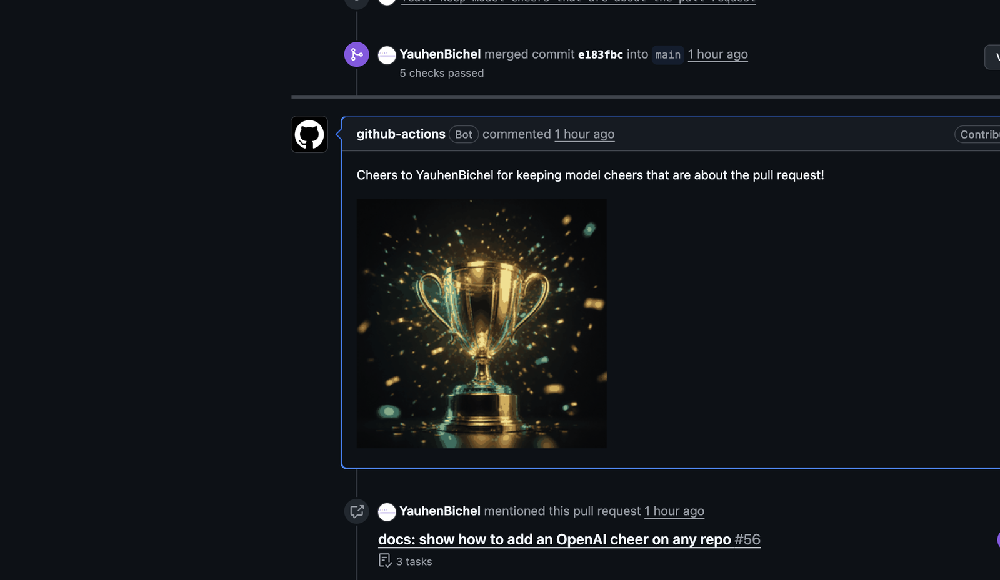

Merge Cheer
Zero-config GitHub Action that comments a G-rated celebration GIF when a pull request merges. This page is the live demo.
Watch the demo
- What. Merge Cheer comments one G-rated GIF when a human pull request merges. Bots are skipped. The Action does not check out the pull request.
- Why. The merge is the moment people actually did the work. No Giphy key. The Action ships its own loops, so it works on a new repository with the default token.
- Where. Code is YauhenBichel/merge-cheer. Real comments already landed on py-harness #350 and molecare-desktop #26.
- How. Pin
YauhenBichel/merge-cheer@v1.8.0on the default branch. Leavetopicunset (ortopic: auto) for a random theme, seeded by the pull request number. Pintopic: comicwhen you want the same mood every time. Ano-cheerlabel skips the GIF. Co-authors are thanked. Reviewers are thanked on merge. Watch the AI demo, then add an OpenAI key when you want a line about what merged.
What happens on merge
- A human pull request merges. Bots are skipped.
- The Action posts one comment. It does not check out the pull request.
- The comment is a thank-you plus a G-rated GIF the Action already ships. No Giphy key.
With an OpenAI key — live on #53
Cheers to YauhenBichel for keeping model cheers that are about the pull request!

Live loops
Four of the shipped GIFs, looping here. Default topic: auto picks a random theme (seeded by the pull request number, so the same PR stays stable). Pin a group when you want one mood every time.


IT-section themes, same Action. Pin topic: python or topic: devops when the repo has a home.


Also on the Action: ship, fix, docs, tests, cleanup, celebration, welcome, party, space, magic, coffee, robot, yeah, sre, qa, design, architecture, engineering, backend, java, cpp. topic: title reads the PR title and body (typo / style / lint / format / chore: map to cleanup; build: maps to tests). A no-cheer or skip-cheer label skips the comment. A second run of the same moment does not post another GIF. A changes-requested cheer does not block the merge cheer. locale picks a built-in thank-you (es, de, fr, pt, uk, it, be, ja); a pinned message wins. Unset model keeps the stdlib path.
Install
Default is topic: auto — a random shipped theme, then one GIF in that group. Pin @v1.8.0 (current release).
GitHub
- Add the workflow below on the default branch.
- Keep
pull_request_targetandpull-requests: writeso a fork merge can get a comment. - Merge a human pull request. github-actions comments one GIF. Bots are skipped.
name: Celebrate merge
on:
pull_request_target:
types: [closed]
permissions:
pull-requests: write
jobs:
celebrate:
if: github.event.pull_request.merged && github.event.pull_request.user.type != 'Bot'
runs-on: ubuntu-latest
steps:
- uses: YauhenBichel/merge-cheer@v1.8.0
Pin a theme when you want the same mood on every merge:
- uses: YauhenBichel/merge-cheer@v1.8.0
with:
topic: comic # or python, devops, sunny, game, …
@v1 is the older first release, not a floating major. An unknown topic falls back to celebration.
GitLab
- The Catalog row is not live. Copy examples/gitlab-ci.yml onto the default branch.
- Add a project access token
GITLAB_TOKENwithapiscope.CI_JOB_TOKENcannot post notes. - Merge into the default branch. The job finds that merge request and comments the GIF. A job that can see a closed or change-requested MR uses those moments instead.
celebrate:
image: python:3.13-alpine
variables:
TOPIC: auto
ACTION_REF: v1.8.0
ACTION_REPO: YauhenBichel/merge-cheer
script:
- apk add --no-cache curl
- curl -fsSL "https://raw.githubusercontent.com/YauhenBichel/merge-cheer/${ACTION_REF}/src/celebrate.py" -o /tmp/celebrate.py
- python3 /tmp/celebrate.py
How to publish a CI/CD Catalog row later: MARKETPLACES.md.
Bitbucket
- The Docker Hub pipe is not public. Copy examples/bitbucket-pipelines.yml onto
main. - Add a secured repository variable
BITBUCKET_ACCESS_TOKENwith pullrequest write. - Merge a pull request. The step comments the GIF. A job that can see a declined or change-requested PR uses those moments instead.
script:
- export ACTION_REF=v1.8.0
- export ACTION_REPO=YauhenBichel/merge-cheer
- export TOPIC="${TOPIC:-auto}"
- curl -fsSL "https://raw.githubusercontent.com/YauhenBichel/merge-cheer/${ACTION_REF}/src/celebrate.py" -o celebrate.py
- python3 celebrate.py
The Docker Hub pipe is not public. How to publish a Hub image and Pipes row later: MARKETPLACES.md.
Watch the AI demo
This is the model path. Zero-config is still Merged — thank you @author.
A human pull request merges. The model writes one short line about what landed. The GIF group still comes from topic. Default auto is a random theme. Set topic: title to use the title map. “Thanks” is empty. A line that names the work is the cheer people actually read.
- What. One line about the work. The GIF still comes from
topic, not from the model. - Why. Generic thanks is not a cheer people keep.
- How. One secret.
model: gpt-4o-mini. One call per merge. A 429 falls back to the stdlib line.

Use a model on your repo
Zero-config stays a GIF plus Merged — thank you @author. Add one repository secret and the Action writes a line about what merged. Generic thanks are dropped. A 429 or a bad reply falls back to the stdlib line. The job still does not check out the pull request head.
- Settings → Secrets and variables → Actions → New repository secret named
OPENAI_API_KEY. - Copy examples/celebrate-openai.yml onto the default branch.
- Merge a human pull request. Read the comment, then the job log for
model: message=….
- uses: YauhenBichel/merge-cheer@v1.8.0
with:
model: gpt-4o-mini
model-api-key: ${{ secrets.OPENAI_API_KEY }}
@v1.7.0 drops generic thanks. A 429 or a junk reply falls back to the stdlib line. Any OpenAI-compatible host works via model-base-url.
Use Hugging Face Inference
Add repository secret HF_TOKEN with Inference Providers permission and copy examples/celebrate-huggingface.yml onto the default branch. No OpenAI key is needed.
- uses: YauhenBichel/merge-cheer@v1.8.0
with:
model: meta-llama/Llama-3.1-8B-Instruct:cheapest
model-base-url: https://router.huggingface.co/v1
model-api-key: ${{ secrets.HF_TOKEN }}
The 8B chat model uses the router's :cheapest provider policy. See Hugging Face Inference Providers for routing and billing; availability and prices can change. Errors, rate limits, and unsafe or generic replies still fall back to the default thank-you. No pull request head checkout.
Use Google Gemini
Add repository secret GEMINI_API_KEY from Google AI Studio and copy examples/celebrate-gemini.yml onto the default branch. If the key is already stored as GOOGLE_API_KEY, use ${{ secrets.GOOGLE_API_KEY }} for model-api-key.
- uses: YauhenBichel/merge-cheer@v1.8.0
with:
model: gemini-2.5-flash-lite
model-base-url: https://generativelanguage.googleapis.com/v1beta/openai
model-api-key: ${{ secrets.GEMINI_API_KEY }}
This uses Google's OpenAI-compatible endpoint, not an OpenAI key. The example uses 2.5 Flash-Lite because Gemini 2.0 Flash has been retired. Errors, rate limits, and unsafe or generic replies fall back to the default thank-you. No pull request head checkout; tests need no live API key.
Use Groq
Add repository secret GROQ_API_KEY from your Groq account and copy examples/celebrate-groq.yml onto the default branch. No OpenAI key is needed.
- uses: YauhenBichel/merge-cheer@v1.8.0
with:
model: openai/gpt-oss-20b
model-base-url: https://api.groq.com/openai/v1
model-api-key: ${{ secrets.GROQ_API_KEY }}
This uses Groq's low-cost GPT OSS 20B chat model. See the model page for current pricing and limits. Errors, rate limits, and unsafe or generic replies fall back to the default thank-you. No pull request head checkout or live API key is needed for the tests.
Use Anthropic Claude
Add repository secret ANTHROPIC_API_KEY using a key scoped to a single Anthropic workspace, then copy examples/celebrate-anthropic.yml onto the default branch. No OpenAI key is needed.
- uses: YauhenBichel/merge-cheer@v1.8.0
with:
model: claude-haiku-4-5-20251001
model-base-url: https://api.anthropic.com/v1
model-api-key: ${{ secrets.ANTHROPIC_API_KEY }}
This uses Anthropic's OpenAI compatibility layer, intended for evaluation rather than most production use cases. Multi-workspace keys require an anthropic-workspace-id header this Action does not expose; use a single-workspace key. The example pins Haiku 4.5. Errors, rate limits, and unsafe or malformed replies fall back to the default thank-you. No pull request head checkout or live key is needed for the tests.
Keep credits low
The model writes only the thank-you line. The GIF group stays from topic (auto is random, title is the map). One call per merge, then skip if that pull request already has a cheer. Use gpt-4o-mini. A 429 is not retried — the stdlib line posts instead. Pin message when you do not want a model call.
Cases
The Action already handles these. The videos above are two of them.
- Zero-config merge.
Merged the readme — thank you @alicewhen the title has a usable word, elseMerged — thank you @alice. Defaulttopic: autois a random group, seeded by the pull request number. - Model merge. Live on #53. The model writes the line. The GIF still comes from
topic, not from the model. - Closed without merge.
Closed — thank you for the work.closed-topicdefaults to coffee. Copy examples/celebrate-more.yml. The model path is examples/celebrate-more-openai.yml — the GIF stays coffee. - Changes requested.
A bit more work — you have this.changes-topicdefaults to yeah. Same two example files. The model writes the line. The GIF stays yeah. topic: title. Reads the PR title and body. Conventional types beat mood words. First-timers can get welcome, plusFirst contribution — welcome.on the comment.- Pinned topic.
topic: python(or comic, devops, …) on every merge. - Your GIFs.
gifs-path: .github/merge-cheerorgifshttps URLs. Merge only. Copy examples/celebrate-custom.yml. Closed and changes stay bundled. - Your note.
note: Come hang out on Discord — https://discord.gg/…sits after the thank-you. Locale and the model line still run. - Skip. Bot author, bot reviewer,
no-cheer/skip-cheer, or a second run of the same moment. A changes-requested cheer does not block the merge cheer. - GitLab / Bitbucket. Merge, closed without merge, or changes requested when the job can see that request. A second run of the same moment does not post another GIF. Curl until Catalog or Pipes exist.
Used by
8 public repositories in MoleCare and this account already run Merge Cheer on the default branch.
MoleCare
- MoleCare/molecare-mcp
- MoleCare/molecare-ml
- MoleCare/molecare-desktop
- MoleCare/molecare-skin-llm
- MoleCare/.github
Also
To be listed, merge a celebrate workflow that uses: YauhenBichel/merge-cheer@v1.8.0 on the default branch.
Zero-config comment
Merged — thank you @alice and @bob.